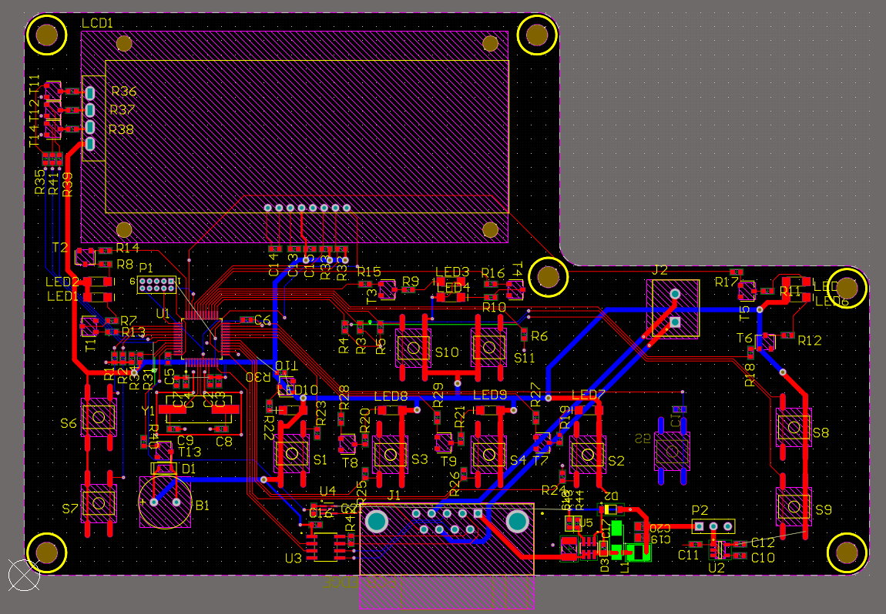

AutoDACI System
Project Background
AutoDACI is an imaging system that uses a new imaging technology made possible by Dr. Rodney Herring, a researcher at the University of Victoria. By using the system, a virtual source is placed in human tissue, emitting sound waves in every direction from the location of the virtual source. By doing this, an ultrasound probe can be used to detect the sound waves coming in, which carry great detail of what the tissue environment is like inside. This can be used to detect cancerous tumours and the vascularization around them non-invasively.
The UVic Biomedical Engineering team focused on using this technology to automate the process of breast cancer screening, by making it safer, more accurate, and most importantly, non-invasive.
My Involvement
With the electrical subteam, I designed the human machine interface PCB for easy operation by technicians. The schematic and PCB were designed using Altium designer. The board uses I2C communication within the board and UART to communicate to the microcontroller (STM F0 discovery). With the team, I began with a mockup of inputs and outputs needed on the board and then sourced parts from DigiKey. The board was determined to consist of a series of LEDs for indications, switches for inputs (calibrate, home, pause, etc), and an LCD screen for alphanumerical output for scanning parameters such as coordinates and progression.
The Team
As this was my introduction into electronics design and my first non-tutorial PCB, I was mentored throughout the process by senior students Harrison Fletcher (Team lead) and Alberto Mingo in circuit design.
For more information on AutoDACI and UVic BMED: